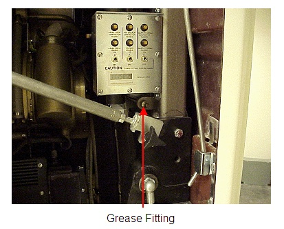
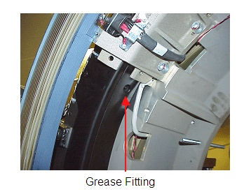
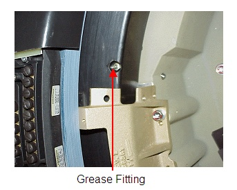

QX/I fitting is located at the upper right-hand corner of gantry (above pivot sector/ below gantry revolutions counter) (see Illustration 1).
H2 and H3 grease fittings are located on stationary bearing either on inside facing or rear facing (see Illustration 2 and Illustration 3).
Rotate gantry by hand to find fitting in cases where fitting location may be hidden by slip ring brackets.
Illustration 1: QXi Grease Fitting Location

Illustration 2: Plus Grease Fitting Locations

Illustration 3: Ultra Grease Fitting Location
